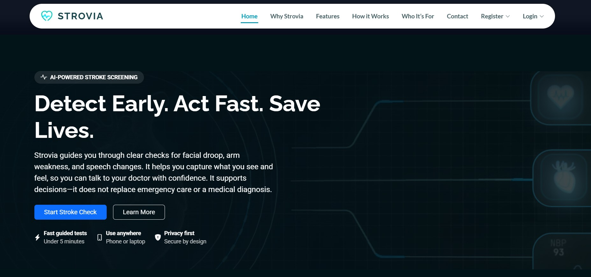
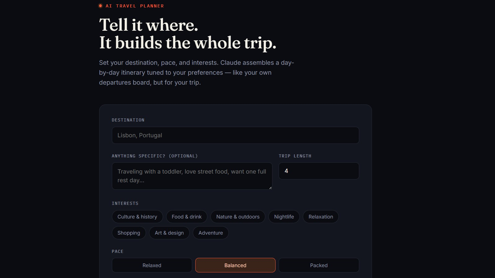

Sneha Maria Saju
Design. Code. Curiosity.
I turn ideas into simple, interactive digital experiences while exploring the space between design, technology, and AI.
Currently: Learning · Building · Experimenting
Featured Work
A few things I've built,
explored, and learned from.
I like taking an idea and turning it into something people can actually interact with. These are a few projects that helped me learn along the way.
"What if technology could help identify risk earlier?"
AI Stroke Detection
I explored how machine learning could be used to predict stroke risk from health and lifestyle information, and built a system around that idea.
Python · Machine Learning · Classification
"Planning a trip, without planning everything yourself."
AI Travel Planner
I built an AI-powered travel planner that takes a user's preferences and turns them into a more personalized travel experience.
AI · Web Development · Recommendation Logic
Built during the IBM SkillsBuild AI & Cloud internship.

Moments That Made Me
A few moments I'm proud of.
Not just because of the result — but because of what I learned along the way.
Tap or click a moment to flip it.
PHOTO
A Little About Me
Hi, I'm Sneha.
I'm an MCA student who enjoys turning ideas into things people can actually see, click, and use. I'm still learning my way around UI/UX and frontend development, but that's also what makes building things exciting for me — I get to experiment, make mistakes, and figure out better ways to do things.
My background in Artificial Intelligence has made me curious about how technology can solve everyday problems, while my interest in design has made me care about how those solutions actually feel to use.
Right now, I'm learning, building, and experimenting — one project at a time.
Design
Exploring UI/UX
Build
Learning frontend
Explore
AI & technology
My Journey
A few steps that brought me here.
2021
Class 10 — St. Joseph School, Abu Dhabi
2023
Class 12 — St. Joseph School, Abu Dhabi
2023–26
BCA — Artificial Intelligence
Sahrdaya College of Advanced Studies
Where I started exploring programming, AI, and software development.
2026 →
MCA
Rajagiri College of Social Sciences
Continuing to learn, build, and explore where technology and creativity meet.
EXPERIENCE
Where I've Been Learning
A STEP OUTSIDE THE CLASSROOM
IBM SkillsBuild — AI & Cloud Internship
During the internship, I gained hands-on exposure to Artificial Intelligence and Cloud Technologies in a professional learning environment. I developed the AI Travel Planner project while strengthening my technical skills through expert-led sessions and practical learning experiences.
Game Development Intern
Developed a 2D platformer game in Unity during a capstone project. Designed levels, implemented player movement and shooter mechanics, managed animations, and applied Unity's physics system. Integrated health, traps, enemies, camera controls, and audio to create a complete gameplay experience. Strengthened skills in game development, problem-solving, and creative programming.
What I Build With
Code
- HTML
- CSS
- Python
- Java
- SQL
AI
- Artificial Intelligence
- Machine Learning
- Generative AI
Exploring
- UI/UX
- JavaScript
- Frontend development
- UI/UX fundamentals
- JavaScript
- Frontend development
- Interaction design
- GitHub & project documentation
Let's make
something interesting.
I'm always open to learning, collaborating, and building something new.